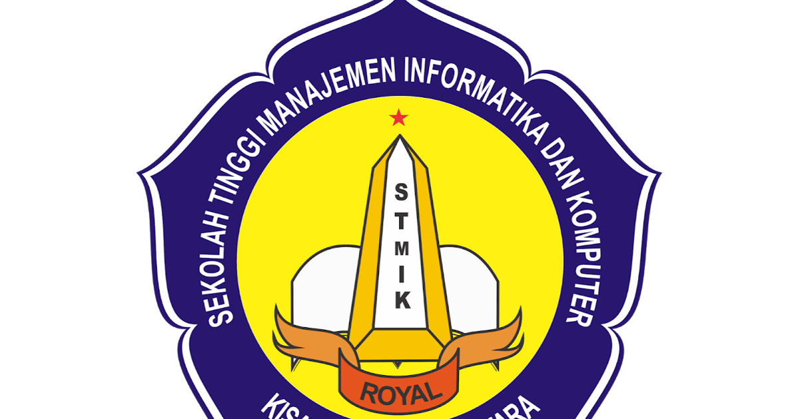

|  |
(STMIK) Royal Kisaran, Sumatera Utara Jl. prof. H.M. Yamin No 173 Kab Asahan , Telp : 0623-41079, Fax : 0623-42366. Homepage : www.royal.ac.id, Website : stmik.royal.ac.id, email : stmik@royal.ac.id |
| Tahun Akademik | : | 20211/Tahun Akademik 20211(Genap) |
| Nim | : | 20220414 |
| Nama | : | Tegar Prasastiyo |
| Program Studi | : | Sistem Informasi |
| Kelas | : | SI S1 2F |
| Dosen PA | : | Muthia dewi M.Pd |
| No | Smt | Kelas | KodeMK | Mata Kuliah | SKS | Dosen | Hari | Jam |
| 1 | 2 | SI S1 2F | SIKK2109 | Komunikasi Data | 2 | FAURIHATUN HELMIAH,M.Kom | Jumat | 8.00 |
| 2 | 2 | SI S1 2F | SIKK2108 | Organisasi Dan Arsitektur Komputer | 2 | RISNAWATI,S.KOM M.KOM | Jumat | 9.55 |
| 3 | 2 | SI S1 2F | SIKB2202 | Algoritma Dan Pemrograman | 3 | PARINI,M.Kom | Kamis | 8.00 |
| 4 | 2 | SI S1 2F | SIKK2110 | Probabilitas Dan Statistika | 2 | MUTHIA DEWI,M.Pd | Rabu | 8.00 |
| 5 | 2 | SI S1 2F | SIKK2107 | Bahasa Inggris 2 | 2 | CHITRA LATIFFANI,M.Hum | Rabu | 9.55 |
| 6 | 2 | SI S1 2F | SIKB2204 | Basis Data Besar | 2 | NENI MULYANI,M.Kom | Selasa | 8.00 |
| 7 | 2 | SI S1 2F | SIPK2003 | Pendidikan Kewarganegaraan Dan Anti Korupsi | 2 | ARI DERMAWAN,M.Hum | Selasa | 9.55 |
| 8 | 2 | SI S1 2F | SIKB 2203 | Desain Web | 3 | AFDHAL SYAFNUR,M.Kom | Senin | 8.00 |
| 9 | 3 | SI S1 2F | SIPK2002 | Bahasa Indonesia | 2 | SRI REZKI MAULINA AZMI,M.Pd | Senin | 11.50 |
| Total SKS yang diambil | :20 | ||
| Maximum SKS yg boleh diambil | :24 |
William Ramdan, M.Kom |
MUTHIA DEWI, M.Kom |
09-Maret-2021 Tegar Prasastiyo Mahasiswa |